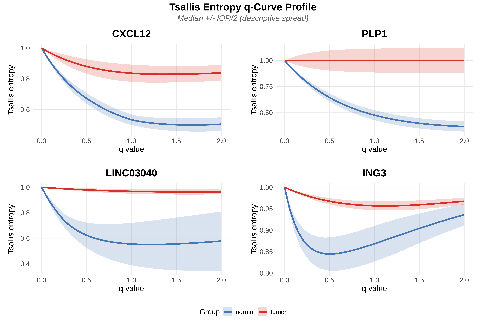

Appendix B: Cross-Method Validation of Scale-Adaptive Interaction Test Results via GAMM and Aligned Rank Transform (ART)
Cristobal Gallardo Alba gallardoalba@pm.me
2026-08-17
Source:vignettes/TSENAT_appendix_B.Rmd
TSENAT_appendix_B.RmdIntroduction
The primary goal of this vignette is to validate that discoveries of scale-dependent entropic index × group interactions from Scale-Adaptive Interaction Tests (SAIT) generalize to non-parametric statistical frameworks with minimal assumptions.
Two Complementary Validation Approaches
Method 1: Generalized Additive Mixed Models (GAMM) with functional q-curve structure.
- Framework: Semi-parametric model combining flexible smooth functions (regression splines in paired designs) with mixed-effects structure; assumes additive model Y = f₁(q) + f₂(condition) + f₃(q, condition) + subject-intercept + ε where f terms are smooth rather than linear.
- Paired design structure: Uses random intercepts by subject
(~1|subject) with AR(1) correlation structure to accommodate repeated
entropy measurements across q-values within each subject. Paired models
are fit via
nlme::lmewith natural regression splines (ns(q, df = 3) × condition) and a marginal F-test for the interaction; this hierarchical approach preserves paired sample structure while modeling autocorrelation in q-ordered measurements. - Distributional assumption: Uses Gaussian residuals (standard for
mixed-effects models); automatically detects bounded support [0,1]
entropy but applies Gaussian family because the paired mixed-model paths
(
nlme::lme/mgcv::gamm()) do not support extended families in paired designs. - Treatment of entropic structure: q is treated as a deterministic
functional argument of the Tsallis statistic, not as a time index. The
confirmatory hypothesis is the functional interaction — H0: β(q) = 0 for
all q, tested on the ORIGINAL entropy curve H(q). The AR(1) structure in
nlme::corAR1()is a working covariance model for the functional residuals, validated by Monte Carlo simulation. - Heteroscedasticity handling: Automatically detects variance
heterogeneity (Breusch-Pagan test); however, heteroscedasticity-based
variance weights are not applied in paired designs due to paired
mixed-model path limitations (
nlme::lme/mgcv::gamm()). - Key advantage: Captures smooth nonlinear q × condition interactions while accommodating paired sample correlation structure through random intercepts and AR(1) correlation modeling.
Method 2: Aligned Rank Transform (ART) —
State-of-the-art non-parametric interaction testing, with Hochberg
Step-Up Correction. The Conover-Iman Rank Transform is also available
via the method='rt' option as an alternative approach.
- Framework: Pure non-parametric method via the ARTool package (Kay et al. 2021). Strips main effects before ranking (“alignment”) to preserve interaction structure (Higgins and Tashtoush 1994; Wobbrock et al. 2011). Zero parametric or distributional assumptions.
- Distributional assumption: None; operates entirely on aligned ranks. Valid under any continuous distribution and correlation structure.
- Treatment of q-ordering: Two-way ART on raw entropy values, treating q-values as categorical factors; aligned ranks decomposed via ANOVA with proper F-test for interactions. Because q is treated as a factor, the continuous ordering of q-values is discarded in the ART analysis — this is a fundamental difference from GAMM, which models q as a continuous smooth predictor.
- Heteroscedasticity handling: ART inherently robust to heteroscedasticity through alignment and ranking; Hochberg step-up correction controls FWER across multiple tests.
- Key advantage: State-of-the-art for non-parametric interaction testing. Properly handles factorial interactions by removing main effects before ranking. More reliable Type I error control than classical rank-transform methods for interaction terms.
Why Two Methods for One Question?
Statistical testing in transcriptomics faces a fundamental challenge: no single method is universally optimal. Different approaches trade-off power for robustness:
| Aspect | Semi-Parametric (GAMM) | Non-Parametric (ART) |
|---|---|---|
| Assumptions | Normality, homoscedasticity | None; aligned ranks, fully non-parametric |
| Power | Highest (if assumptions hold) | Good; reduced but robust to violations |
| Interaction testing | Marginal F-test on regression-spline interaction terms | Proper interaction tests via alignment (Higgins and Tashtoush 1994) |
| q-value treatment | Continuous smooth predictor (preserves ordinal structure) | Categorical factor (discards ordering) |
| Robustness | Moderate | Highest |
| Outlier sensitivity | Moderate potential for bias | Minimal; inherently resistant |
Validation strategy: Concordance between both methods confirms robustness across statistical frameworks.
Setup
This section initializes the analysis environment by loading required packages, setting a random seed for reproducibility, and preparing the test dataset.
suppressPackageStartupMessages({
library(ggplot2)
library(SummarizedExperiment)
library(dplyr)
library(gridExtra)
})
set.seed(42)
if (!requireNamespace("devtools", quietly = TRUE)) {
stop("Please install devtools to run this vignette against the local package source.")
}
if ("package:TSENAT" %in% search()) {
detach("package:TSENAT", unload = TRUE, character.only = TRUE)
}
pkg_root <- normalizePath("..", mustWork = FALSE)
devtools::load_all(pkg_root)
# Load preprocessed dataset
data(readcounts)
readcounts <- as.matrix(readcounts)
mode(readcounts) <- "numeric"
# Load metadata
metadata_df <- read.table(
system.file("extdata", "metadata.tsv", package = "TSENAT"),
header = TRUE, sep = "\t"
)
gff3_dataset <- system.file("extdata", "annotation.gff3.gz", package = "TSENAT")
# Configure analysis parameters first (best practice: fail-fast validation)
config <- TSENAT_config(
sample_col = "sample",
condition_col = "condition",
subject_col = "paired_samples",
q = seq(0, 2, by = 0.05),
nthreads = 3,
paired = TRUE,
control = "normal"
)
# Build analysis object: creates SummarizedExperiment and initializes TSENATAnalysis
analysis <- build_analysis(
readcounts = readcounts,
tx2gene = gff3_dataset,
metadata = metadata_df,
tpm = tpm,
effective_length = effective_length,
config = config
)
# Apply filtering for quality control
analysis <- filter_analysis(
analysis,
stringency = "medium"
)Computing Tsallis Entropy with Pseudocount Regularization
Pseudocounts are critical for statistical robustness when applying non-parametric tests to sparse RNA-seq count data. RNA-seq experiments typically contain many zero or near-zero counts, which creates two problems for rank-based methods:
Ties in rankings: Sparse counts produce many tied values (especially zeros), which reduces the discriminatory power of rank tests. Rank-based statistics depend on unique orderings; when many observations are identical, the test statistic contains less information, reducing statistical power.
Library size artifacts: Small count differences due to sequencing depth variations overshadow true biological differences. Normalized library sizes (accounting for sequencing depth) ensure that entropy estimates reflect true biological diversity rather than technical artifacts (Robinson et al. 2010; Love et al. 2014).
By adding small pseudocounts proportional to library size, we achieve two benefits:
- Regularization breaks ties and prevents zero-inflation bias that compromises rank-based inference.
- Normalization makes entropy estimates comparable across samples with different sequencing depths. This approach is standard in RNA-seq analysis and is particularly important for entropy-based diversity metrics, which require positive values for logarithmic transforms.
The calculate_diversity() function implements automatic
pseudocount selection, scaling pseudocount magnitude and diversity
estimates by median library size to ensure robust statistical inference
across the range of sequencing depths in your dataset.
# Compute diversity using S4 wrapper with bootstrap confidence intervals
analysis <- calculate_diversity(
analysis,
norm = TRUE,
pseudocount = "auto"
)Aligned Rank Transform (ART)
TSENAT uses the Aligned Rank Transform (ART) as the
default non-parametric method for testing Q×Condition interactions. ART
is the state-of-the-art for non-parametric factorial analysis,
implemented via the ARTool R package (Kay et al.
2021; Wobbrock et al. 2011). The classical Conover-Iman Rank
Transform is also available via method='rt' as an
alternative approach (Conover and Iman
1981).
- Robustness to Distribution Violations
Tsallis entropy values exhibit inherent distributional properties that often violate parametric assumptions:
- Non-normality: Entropy commonly exhibits bounded support (e.g., normalized entropy in [0,1]), producing skewed or bimodal distributions rather than normal distributions.
- Heteroscedasticity: Variance in entropy estimates varies systematically across q-values. Low q-values (emphasizing rare transcripts) produce volatile entropy estimates with high variance; high q-values (emphasizing abundant transcripts) produce stable estimates with lower variance.
- Outlier sensitivity: Rare isoforms and count variability can produce extreme entropy values that heavily influence parametric tests.
ART avoids these issues through alignment and ranking — stripping main effects before ranking preserves interaction structure while eliminating distributional dependence. The aligned ranks are uniformly distributed and contain no outliers, making the method valid for ANY continuous distribution (Higgins and Tashtoush 1994; Wobbrock et al. 2011). Critically, rank ordering is unaffected by normalization choice; whether entropy is normalized, log-transformed, or left raw, the test produces identical results (Conover and Iman 1981).
- Paired Design for Ordered q-Value Structure
Tsallis entropy has a fundamental sequential property: entropy curves are smooth functions of q. As q increases from 0 (rare-species-emphasizing) to ∞ (common-species-emphasizing), entropy values change systematically. This ordered structure is critical to interpreting q-dependent patterns and exhibits AR(1) autocorrelation: consecutive q-values produce correlated entropy estimates.
ART handles this structure through its alignment step: within-subject ranking after stripping main effects preserves the pairing structure while removing the influence of AR(1) dependence (Higgins and Tashtoush 1994; Wobbrock et al. 2011). Because aligned ranks are constructed from residuals after removing main effects, autocorrelation in the original entropy values does not propagate into the test statistic — rank-based tests are invariant to monotonic transformations of the data, and alignment renders the residuals approximately exchangeable under the null hypothesis of no interaction (Ernst 2004; Song 2007). However, this robustness is not absolute: strong autocorrelation can reduce effective sample size and affect power even when the test remains valid.
- Interaction Testing: Testing q × Condition Effects
The implementation uses ART (alignment + ranking + ANOVA), the modern state-of-the-art approach:
where:
- Main effects are stripped via alignment: residuals = original − main effect estimates
- Aligned data are then ranked: (within-subject for paired designs)
- Two-way ANOVA decomposes aligned ranked data:
- = sum of squares for condition interaction / degrees of freedom
- = residual sum of squares / residual degrees of freedom
- -statistic follows -distribution under null hypothesis of no interaction
This directly tests the core biological question: “Does entropy q-dependence differ between groups?” The aligned rank ANOVA is the modern state-of-the-art approach for non-parametric interaction testing, validated across balanced and unbalanced designs (Wobbrock et al. 2011).
Assumption Validation
To ensure valid statistical inference, we verify key data assumptions across multiple dimensions.
# Validate statistical assumptions (including GAMM diagnostics)
analysis <- calculate_assumptions(
analysis,
checks = "all" # Include core checks + GAMM diagnostics
)
# Get assumptions
assumptions_text <- results(analysis, type = "assumptions")
print(assumptions_text)| Test | Result | Interpretation |
|---|---|---|
| Exchangeability (Permutation test) | p=0e+00 | Ordering detected |
| Monotonicity (Spearman rho) | r=0.259 | Heterogeneous |
| Consistency (Kendall’s W / ICC) | W=0e+00, ICC=0.108 | Low |
| Concurvity (Smooth collinearity) | 0.000 | Low |
| EDF Ratio (Smoothing) | 0.024 | Over-smoothed |
| Non-linearity (Delta R^2 vs LM) | 0.0% | Use linear |
| Basis Dimension (Spline basis) | k=10 | Adequate |
| Correlation fit | Observed autocorr=-0.007; independence suitable | Good fit |
| Cluster variation | Mean size=77.0 | Homogeneous |
| Independence | Mean within-cluster residual correlation=-0.018 | Independent |
| Scale parameter | phi=0.100 | Under-dispersed (rare) |
| Variance components | ICC=0.119; B=0.006, W=0.048 | Lmm justified |
| Normality | p=3.57e-27 | Non-normal |
| Homogeneity | p=3.14e-128; CV=0.439 | Heterogeneous |
| Influence | Outliers=778, Extreme=0, Influential=26.6% | Many outliers |
| Variance adequacy | Components for 90%=10, 95%=13, 99%=17 | Poor reduction |
| Bootstrap stability | Bootstrap SE=0.200; Stable CIs=100% | Moderate stability |
Interpretation of Results: The exchangeability test detects strong serial correlation (p ≈ 0), indicating that consecutive samples are more correlated than expected by chance. This violation is not problematic for the Aligned Rank Transform because ART’s alignment step removes main effects before ranking, after which the aligned residuals are approximately exchangeable under the null hypothesis of no interaction (Conover and Iman 1981; Higgins and Tashtoush 1994). While strong autocorrelation can reduce effective sample size and affect power, the test itself remains valid. The three reasons outlined above (distributional robustness, paired ordered structure handling, and proper interaction testing via alignment) together make ART ideally suited for multi-q entropy validation without requiring strong distributional assumptions.
Aligned Rank Transform (ART): Testing q × Condition Interactions
Now we use the Aligned Rank Transform (ART, default) — the state-of-the-art non-parametric method for interaction testing — combined with Hochberg step-up correction for multiple testing across genes. ART properly handles factorial interactions by stripping main effects before ranking, providing more reliable Type I error control than classical rank-transform methods.
# Run Aligned Rank Transform (ART, default method)
# This preserves the GAMM results in 'analysis' for later concordance comparison
# Run ART for q × condition interaction
analysis_rank <- calculate_rank_transform(
analysis,
multicorr = "hochberg"
)
# Extract ALL results (no filtering) for summary statistics
rank_transform_results_all <- results(analysis_rank, type = "rank_test", rankBy = "pvalue")
# Extract top significant genes for display
rank_transform_results <- results(analysis_rank, type = "rank_test", rankBy = "pvalue", n = 20, filterFDR = 0.05)
print(head(rank_transform_results, n = 10))| Metric | Value |
|---|---|
| Genes tested | 77 |
| Significant (p < 0.05) | 45 |
| Significant (adj_p < 0.05, FWER-controlled) | 40 |
| NAs | 0 |
| Mean effect size () | 0.8% |
| Median effect size () | 0.4% |
| Strong effect genes ( > 10%) | 0 |
| Gene | P-value | Adj. P-value | F-Statistic | Effect Size (η²) | Interaction Class |
|---|---|---|---|---|---|
| CXCL12 | 1.3e-130 | 9.9e-129 | 80.3513 | 0.0657 | Moderately q-dependent |
| PLP1 | 1.2e-98 | 9.5e-97 | 44.1746 | 0.0364 | Moderately q-dependent |
| LINC03040 | 6.9e-76 | 5.2e-74 | 27.8414 | 0.0470 | Moderately q-dependent |
| ING3 | 4.9e-44 | 3.6e-42 | 13.0747 | 0.0247 | Moderately q-dependent |
| ATG5 | 4.2e-42 | 3e-40 | 12.3991 | 0.0204 | Moderately q-dependent |
| CENPV | 2.5e-38 | 1.8e-36 | 11.1349 | 0.0080 | Moderately q-dependent |
| FAM114A2 | 1.8e-37 | 1.3e-35 | 10.8532 | 0.0234 | Moderately q-dependent |
| ZNF714 | 1.9e-34 | 1.4e-32 | 9.9022 | 0.0201 | Moderately q-dependent |
| ETFRF1 | 1.4e-25 | 9.9e-24 | 7.3482 | 0.0090 | Moderately q-dependent |
| METTL26 | 4.2e-25 | 2.8e-23 | 7.2225 | 0.0169 | Moderately q-dependent |
Visualize q-curves for top genes:
# Plot top genes from Aligned Rank Transform (ART) (using all genes, not just significant ones)
# This ensures the plot displays n_top genes regardless of significance threshold
top_genes_plot <- plot_diversity_spectrum(analysis, sait_res = rank_transform_results_all, n_top = 4)
print(top_genes_plot)
Supplementary Figure 1 | Aligned Rank Transform (ART) results for scale-dependent isoform switching. Q-curves for top genes identified by ART; compare visual patterns with GAMM results (main vignette Figure 2) to assess method agreement.
Generalized Additive Mixed Model Approach (GAMM)
This section loads precomputed GAMM results generated in the main vignette (TSENAT.Rmd).
# Load precomputed GAMM analysis object from RDS file
analysis_sait <- readRDS(
system.file("extdata", "analysis_sait.rds", package = "TSENAT")
)
# Extract GAMM results for inspection using accessor function
sait_results <- results(analysis_sait, type = "sait", rankBy = "pvalue")
print(sait_results)| Metric | Value |
|---|---|
| Genes tested | 76 |
| Significant (p < 0.05) | 66 |
| Concordant (p < 0.05 AND adj_p < 0.05) | 57 |
| NAs | 0 |
| Mean effect size | 30.0% |
| Median effect size | 24.8% |
| Strong effect genes (effect_size > 30%) | 32 |
| Model convergence rate | 100.0% |
| Gene | p (interaction) | Adjusted p | Effect size | Test statistic |
|---|---|---|---|---|
| CXCL12 | 2.15e-139 | 1.63e-137 | 74.0% | 370.00 |
| ING3 | 4.15e-57 | 3.12e-55 | 32.3% | 109.18 |
| THY1 | 7.49e-55 | 5.54e-53 | 35.8% | 103.97 |
| LINC03040 | 5.54e-47 | 4.05e-45 | 58.1% | 86.46 |
| SNHG10 | 7.69e-43 | 5.54e-41 | 21.0% | 77.62 |
| MEF2A | 2.34e-36 | 1.66e-34 | 17.1% | 64.30 |
| ASMTL | 2.18e-33 | 1.52e-31 | 39.4% | 58.41 |
| HDAC2 | 2.93e-33 | 2.02e-31 | 22.7% | 58.15 |
| ENSG00000274322 | 3.02e-29 | 2.05e-27 | 43.9% | 50.38 |
| ATG5 | 2.32e-28 | 1.56e-26 | 51.5% | 48.70 |
Method Concordance Analysis
A critical validation step is to compare whether the Aligned Rank Transform (ART) and GAMM produce consistent results. High concordance between methods (i.e., genes significant in both approaches) provides strong evidence that discoveries are robust to methodological choice. Discordant genes — those significant in only one method — warrant closer inspection: they may represent genuine biological signals revealed by one method’s specific advantages, or artifacts of that method’s assumptions. This section quantifies agreement between approaches and identifies high-confidence genes significant across both statistical frameworks.
# Compute concordance analysis using new two-object API
rank_results <- results(analysis_rank, type = "rank_test")
if (is.null(rank_results) || length(rank_results) == 0) {
stop("Cannot run calculate_concordance(): rank_test results are empty. Ensure calculate_rank_transform() completed successfully.")
}
analysis_rank <- calculate_concordance(
analysis_sait = analysis_sait,
analysis_rank = analysis_rank,
verbose = TRUE
)
# Extract concordance results with list format for component display
concordance_results <- results(analysis_rank, type = "concordance", format = "list")| Metric | Value |
|---|---|
| Total genes compared | 76 |
| Spearman correlation (p-values) | rho = 0.5025 |
| Both methods significant (p < 0.05) | 35 (46.1%) |
| SAIT only significant | 22 (28.9%) |
| Rank test only significant | 4 (5.3%) |
| Neither significant | 15 (19.7%) |
| Concordance rate | 46.1% |
| Discordance rate | 34.2% |
| Gene | SAIT adj p | Rank test adj p | SAIT Effect | Rank test rho^2 |
|---|---|---|---|---|
| CXCL12 | 1.63e-137 | 9.85e-129 | 74.0% | 0.066 |
| LINC03040 | 4.046e-45 | 5.18e-74 | 58.1% | 0.047 |
| ING3 | 3.12e-55 | 3.643e-42 | 32.3% | 0.025 |
| ATG5 | 1.557e-26 | 3.045e-40 | 51.5% | 0.020 |
| SPICE1 | 5.743e-22 | 3.274e-22 | 53.8% | 0.021 |
| ASMTL | 1.523e-31 | 1.101e-19 | 39.4% | 0.005 |
| FAM114A2 | 6.857e-19 | 1.294e-35 | 39.5% | 0.023 |
| ETFRF1 | 1.935e-18 | 9.853e-24 | 62.5% | 0.009 |
| RAP1GDS1 | 2.191e-25 | 8.824e-16 | 37.5% | 0.019 |
| ZNF714 | 3.273e-12 | 1.358e-32 | 30.4% | 0.020 |
Statistical Power vs. Robustness: Understanding Method Discordance
The substantial discordance between GAMM and ART results — where GAMM identifies many more significant genes — reflects a fundamental trade-off in statistical methodology: parametric methods maximize power when assumptions hold, while non-parametric methods sacrifice power for robustness to assumption violations. The exact percentages depend on the dataset and analysis parameters; the pattern of GAMM detecting more interactions than ART is the consistent finding.
GAMM’s superior power derives from three factors:
Distributional assumptions: GAMM assumes approximately normal residuals and homogeneous variance, which are reasonable after appropriate transformation for entropy data. Under these assumptions, parametric methods are theoretically optimal, achieving maximum power for a given type I error rate. ART is assumption-free but necessarily discards quantitative information through alignment and ranking, which reduces statistical power when the underlying data are approximately normal.
Model flexibility: GAMM captures nonlinear q patterns with splines (natural regression splines with 3 df for paired designs) that simultaneously fit nonlinear trends while controlling degrees of freedom. This flexibility allows GAMM to detect subtle entropic index × group interactions across all q-values.
Continuous vs. categorical q treatment: GAMM models q as a continuous smooth predictor across all 41 q-values, preserving the ordinal structure and borrowing strength across adjacent q-levels. ART treats q as a categorical factor — while this enables proper interaction testing via alignment, it discards the continuous ordering information, reducing sensitivity to graded q-dependent trends. This discretization is a major contributor to ART’s lower power relative to GAMM, independent of distributional assumptions.
This complementary approach—combining high-power parametric tests with robust nonparametric alternatives—provides confidence that discoveries are methodologically sound rather than artifacts of statistical assumptions.
Visualization: Method Comparison
Visual comparison of concordance patterns provides intuitive assessment of which genes align between methods and which are method-specific. The following plots display significance calls, effect sizes, and agreement metrics in a format that facilitates interpretation of both robust discoveries and method-specific findings.
# Create comparison plot using S4 wrapper
# Concordance analysis results are stored in analysis metadata after calculate_concordance()
p <- plot_concordance(analysis_rank, verbose = TRUE)
grid::grid.draw(p)
Supplementary Figure 2 | Method concordance visualization comparing Aligned Rank Transform (ART) and GAMM approaches for detecting q × condition interactions. Scatter plot showing overlap in genes identified as significant by each method; reveals parametric-non-parametric agreement patterns.
Session Information
sessionInfo()
#> R version 4.5.3 (2026-03-11)
#> Platform: x86_64-conda-linux-gnu
#> Running under: Ubuntu 22.04.5 LTS
#>
#> Matrix products: default
#> BLAS/LAPACK: /home/nouser/miniconda3/lib/libopenblasp-r0.3.30.so; LAPACK version 3.12.0
#>
#> locale:
#> [1] LC_CTYPE=es_ES.UTF-8 LC_NUMERIC=C
#> [3] LC_TIME=de_DE.UTF-8 LC_COLLATE=es_ES.UTF-8
#> [5] LC_MONETARY=de_DE.UTF-8 LC_MESSAGES=es_ES.UTF-8
#> [7] LC_PAPER=de_DE.UTF-8 LC_NAME=C
#> [9] LC_ADDRESS=C LC_TELEPHONE=C
#> [11] LC_MEASUREMENT=de_DE.UTF-8 LC_IDENTIFICATION=C
#>
#> time zone: Europe/Berlin
#> tzcode source: system (glibc)
#>
#> attached base packages:
#> [1] stats4 stats graphics grDevices utils datasets methods
#> [8] base
#>
#> other attached packages:
#> [1] TSENAT_0.99.35 testthat_3.3.2
#> [3] gridExtra_2.3 dplyr_1.2.1
#> [5] SummarizedExperiment_1.40.0 Biobase_2.70.0
#> [7] GenomicRanges_1.62.1 Seqinfo_1.0.0
#> [9] IRanges_2.44.0 S4Vectors_0.48.1
#> [11] BiocGenerics_0.56.0 generics_0.1.4
#> [13] MatrixGenerics_1.22.0 matrixStats_1.5.0
#> [15] ggplot2_4.0.3 kableExtra_1.4.0
#> [17] BiocStyle_2.38.0
#>
#> loaded via a namespace (and not attached):
#> [1] Rdpack_2.6.6 sandwich_3.1-1 rlang_1.2.0
#> [4] magrittr_2.0.5 multcomp_1.4-30 otel_0.2.0
#> [7] compiler_4.5.3 mgcv_1.9-4 systemfonts_1.3.2
#> [10] vctrs_0.7.3 stringr_1.6.0 pkgconfig_2.0.3
#> [13] fastmap_1.2.0 backports_1.5.1 XVector_0.50.0
#> [16] ellipsis_0.3.3 labeling_0.4.3 rmarkdown_2.31
#> [19] sessioninfo_1.2.3 tzdb_0.5.0 nloptr_2.2.1
#> [22] ragg_1.5.2 purrr_1.2.2 xfun_0.58
#> [25] cachem_1.1.0 jsonlite_2.0.0 DelayedArray_0.36.1
#> [28] BiocParallel_1.44.0 broom_1.0.13 parallel_4.5.3
#> [31] R6_2.6.1 bslib_0.11.0 stringi_1.8.7
#> [34] RColorBrewer_1.1-3 boot_1.3-32 car_3.1-5
#> [37] pkgload_1.5.2 brio_1.1.5 jquerylib_0.1.4
#> [40] estimability_1.5.1 Rcpp_1.1.1-1.1 bookdown_0.46
#> [43] knitr_1.51 usethis_3.2.1 zoo_1.8-15
#> [46] readr_2.2.0 Matrix_1.7-5 splines_4.5.3
#> [49] tidyselect_1.2.1 rstudioapi_0.18.0 abind_1.4-8
#> [52] yaml_2.3.12 codetools_0.2-20 pkgbuild_1.4.8
#> [55] plyr_1.8.9 lattice_0.22-9 tibble_3.3.1
#> [58] withr_3.0.3 S7_0.2.2 evaluate_1.0.5
#> [61] survival_3.8-6 desc_1.4.3 xml2_1.5.2
#> [64] pillar_1.11.1 BiocManager_1.30.27 carData_3.0-6
#> [67] reformulas_0.4.4 rprojroot_2.1.1 hms_1.1.4
#> [70] scales_1.4.0 minqa_1.2.8 ARTool_0.11.2
#> [73] xtable_1.8-8 glue_1.8.1 pheatmap_1.0.13
#> [76] emmeans_2.0.3 tools_4.5.3 lme4_2.0-1
#> [79] fs_2.1.0 mvtnorm_1.3-6 cowplot_1.2.0
#> [82] grid_4.5.3 tidyr_1.3.2 rbibutils_2.4.1
#> [85] devtools_2.5.2 nlme_3.1-169 Formula_1.2-5
#> [88] cli_3.6.6 textshaping_1.0.5 S4Arrays_1.10.1
#> [91] viridisLite_0.4.3 svglite_2.2.2 geepack_1.3.13
#> [94] gtable_0.3.6 sass_0.4.10 digest_0.6.39
#> [97] TH.data_1.1-5 SparseArray_1.10.10 htmlwidgets_1.6.4
#> [100] farver_2.1.2 memoise_2.0.1 htmltools_0.5.9
#> [103] pkgdown_2.2.0 lifecycle_1.0.5 MASS_7.3-65